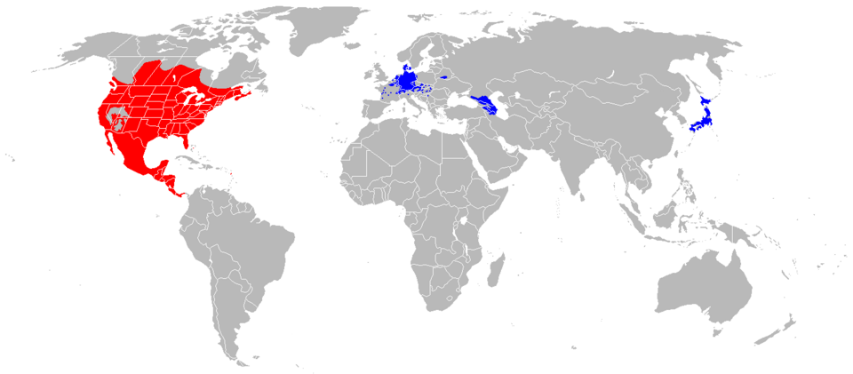

Quick Facts
- Body length: About 16-28 inches, plus tail
- Weight: Commonly 8-20 pounds
- Lifespan: Often 2-3 years in the wild
- Conservation: Least Concern
- Range: Canada, the United States, and Central America
Key Nighttime Adaptations
Raccoons are well equipped as nighttime creatures, blending into the environment with dark fur bodies, ringed tails, and black fur surrounding their eyes to decrease glare at night. Raccoons possess a tapetum lucidum, a reflective layer in their eyes that enhances night vision. During the day these features can make them easy for predators to spot.
Diet
Raccoons are opportunistic feeders, consuming a wide range of foods including fruits, insects, small animals, and human-provided food sources.
Role in Ecosystem
As omnivores and scavengers, raccoons play a crucial role in their ecosystem. They help keep populations of small pests in check and contribute to the dispersal of seeds from the fruits they consume. Raccoons are also prey for larger predators such as coyotes and bobcats.
Fun Fact: Raccoons dunk their food in water in order to enhance their sense of touch, not to wash it. Their paws hold up to five times more sensory receptors than their whiskers, and wetting their hands increases sensation by up to 50%.


Light Pollution's Effect on Raccoons
Light pollution can cause raccoons to diverge from their usual paths and hunt at irregular times. It has become increasingly common to see raccoons in broad daylight as their normal scavenging schedule has been disrupted, causing them distress and confusion. Daytime roaming can increase their chances of human interaction, which can lead to the spread of disease or create dangers on the road for drivers swerving out of the way to avoid the unsuspecting animals.